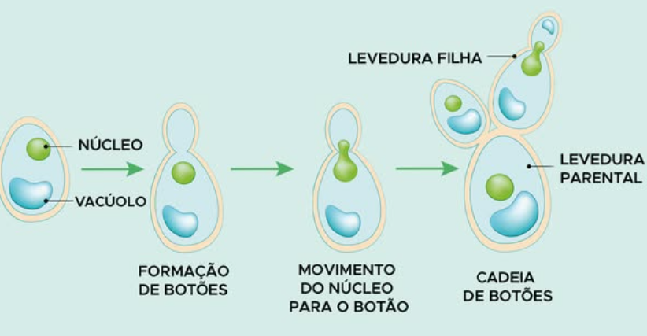
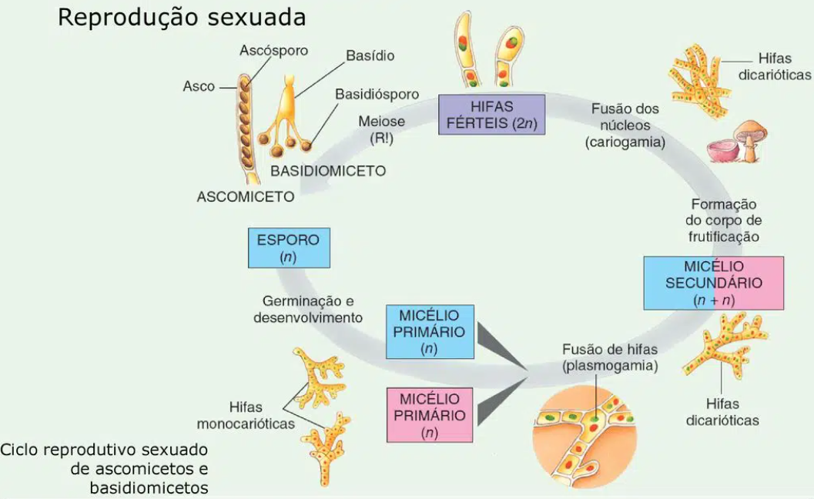

Os fungos incluem cogumelos, leveduras, mofos, bolores e trufas. São organismos que vivem no ar, na água, na terra ou parasitando plantas e animais. Alguns são microscópicos, outros se estendem por grandes superfícies. A Micologia é a área da Biologia que estuda os organismos que compõem esse reino.
Com grande diversidade na morfologia e no hábitat, os fungos são organismos aclorofilados e heterótrofos que obtêm seus nutrientes digerindo externamente os alimentos e, em seguida, absorvendo apenas os nutrientes que lhes são importantes. A parede celular das células desses organismos é constituída por quitina, um carboidrato semelhante à celulose dos vegetais, e seu produto de reserva é o glicogênio.
A estrutura corporal dos fungos pluricelulares é uma rede de pequenos filamentos chamados hifas, que formam um conjunto chamado micélio. As hifas podem ser:
Muitas espécies de fungos apresentam corpo de frutificação, que é formado por hifas diferenciadas e responsável pela reprodução sexuada, como os cogumelos e as orelhas-de-pau.

O modo de vida dos fungos inclui espécies parasitas, mutualísticas e sapróbias, que são importantes agentes de decomposição no ambiente. Todos os fungos fazem digestão externa, liberando enzimas digestivas que decompõem o alimento. Por absorção, as hifas utilizam os nutrientes obtidos dessa digestão, sendo que esse procedimento é responsável pelo apodrecimento de alimentos, couro, tecidos etc.
Os fungos formam um dos grupos mais importantes de organismos no planeta. Entre as funções que desempenham, as principais são reciclagem de matéria orgânica, alimentação, produção de medicamentos e controle biológico. Contudo, alguns fungos são causadores de doenças.
Existem mais de 40 espécies de fungos causadores de doenças (micoses) nos seres humanos. Por exemplo, a candidíase é causada pela espécie Candida albicans, podendo se instalar na boca (sapinho), na pele e no órgão sexual feminino. Os sintomas são lesões brancas na boca, irritação e vermelhidão na pele e inflamação e coceira na vagina. Outras micoses, como a tinha, caracterizada por manchas vermelhas, com bordas nítidas e que coçam, podem afetar a pele como um todo, mas são comuns entre os dedos dos pés ("frieira" ou "pé de atleta") e no couro cabeludo. A onicomicose afeta as unhas tanto dos pés quanto das mãos, podendo causar quebras e descolamentos. Para evitar as micoses, recomenda-se manter o corpo seco e limpo e não compartilhar objetos de uso pessoal, como calçados, bonés, toalhas, peças íntimas etc. O tratamento dessas doenças é realizado com substâncias antifúngicas.
Os fungos também podem ser utilizados como medicamentos. A penicilina, por exemplo, é um antibiótico importante produzido com espécies do gênero Penicillium. Já a ciclosporina, obtida da espécie Tolypocladium inflatum, tem ação imunossupressora e é usada no tratamento de pacientes que realizaram transplantes a fim de diminuir a rejeição.
Os fungos também são usados como alimentos, por exemplo o champignon e o shitake. Também são utilizados na produção de pão, queijos e bebidas alcoólicas, como vinho e cerveja. O fungo mais comumente utilizado é a levedura da espécie Saccharomyces cerevisiae, que por fermentação alcoólica (processo anaeróbio) quebra os açúcares presentes na massa do pão, nos cereais utilizados para a fabricação da cerveja e no suco de uva para a fabricação de vinho. No processo de fermentação, são liberados etanol e CO2, que formam as bolhas presentes na cerveja e fazem o pão crescer.
Queijos como o roquefort e o camembert são produzidos com as espécies de fungos Penicillium roqueforti e Penicillium camemberti, respectivamente, que por fermentação lática quebram o açúcar do leite e liberam ácido lático.
Os fungos se organizam em quatro grupos que são identificados pelas sequências de DNA, pelos detalhes da estrutura celular e pelo tipo de reprodução.
Algumas espécies de fungos não apresentam fase sexuada em seu ciclo de vida e são consideradas fungos imperfeitos. Em uma classificação antiga, eram denominados deuteromicetos.
Nos fungos, as formas de reprodução observadas são assexuada e sexuada.
A reprodução assexuada geralmente ocorre por: fragmentação, com o micélio se fragmentando e formando novos micélios; brotamento ou gemulação, processo típico das leveduras, que formam brotos que, quando se separam da célula-mãe, constituem um novo indivíduo ou permanecem aderidos, formando cadeias de células; esporulação, na qual células haploides com paredes espessas e resistentes – os esporos – são liberadas e conseguem, em ambiente adequado, germinar e formar novo fungo.

A reprodução sexuada varia nos diferentes grupos de fungos. De forma geral, ocorre a plasmogamia (fusão do citoplasma) de células de hifas diferentes, originando hifas com dois núcleos ou dicarióticas (n+n). Quando ocorre a cariogamia (fusão de núcleos haploides), são formados zigotos diploides (2n) que, depois de sofrerem meiose, originam células haploides (n), que são os esporos. Estes, por sua vez, se desprendem, são levados pelo vento e, em condições favoráveis, germinam e originam um novo micélio, recomeçando o ciclo. Veja a seguir a representação da reprodução sexuada nos basidiomicetos, um grupo bastante representativo entre os fungos.

Os liquens são formados por uma parceria estreita entre um fungo (micobionte), geralmente um ascomiceto, e uma alga ou cianobactéria (fotobionte). Essa parceria é uma relação harmônica chamada mutualismo e, nos liquens, a associação é tão íntima que fungo e alga formam um único organismo. Enquanto a alga faz fotossíntese e fornece nutrientes para o fungo, este a protege e mantém suas células em ambiente úmido e com luminosidade adequada. Existem mais de 18 000 espécies de liquens, que geralmente são formados por fungos ascomicetos e algas clorofíceas unicelulares.
Os liquens são encontrados em ambientes inóspitos da Terra, podendo sobreviver em regiões árticas e em rochas costeiras, além de paredes, árvores e concreto. Em alguns locais, são fonte de alimento para animais e têm função de bioindicadores de poluição atmosférica, pois costumam desaparecer de regiões onde essa poluição ocorre.
De acordo com sua morfologia, os liquens são classificados em:
A reprodução dos liquens pode ser feita por fragmentação de pedaços que contêm algas e hifas de fungos, os sorédios. Essas estruturas reprodutoras reconstituem um novo líquen quando se soltam e são levadas pelo vento.
As micorrizas são consideradas relações mutualísticas entre fungos e raízes de plantas, nas quais o fungo recebe os produtos da fotossíntese do vegetal enquanto aumenta a superfície de absorção da raiz e, assim, facilita a obtenção de nutrientes, principalmente de fósforo. Muitas experiências têm demonstrado que as plantas sem fungo não conseguem manter adequados os níveis de minerais.
Clique aqui para praticar com exercícios sobre o tema desta sessão.